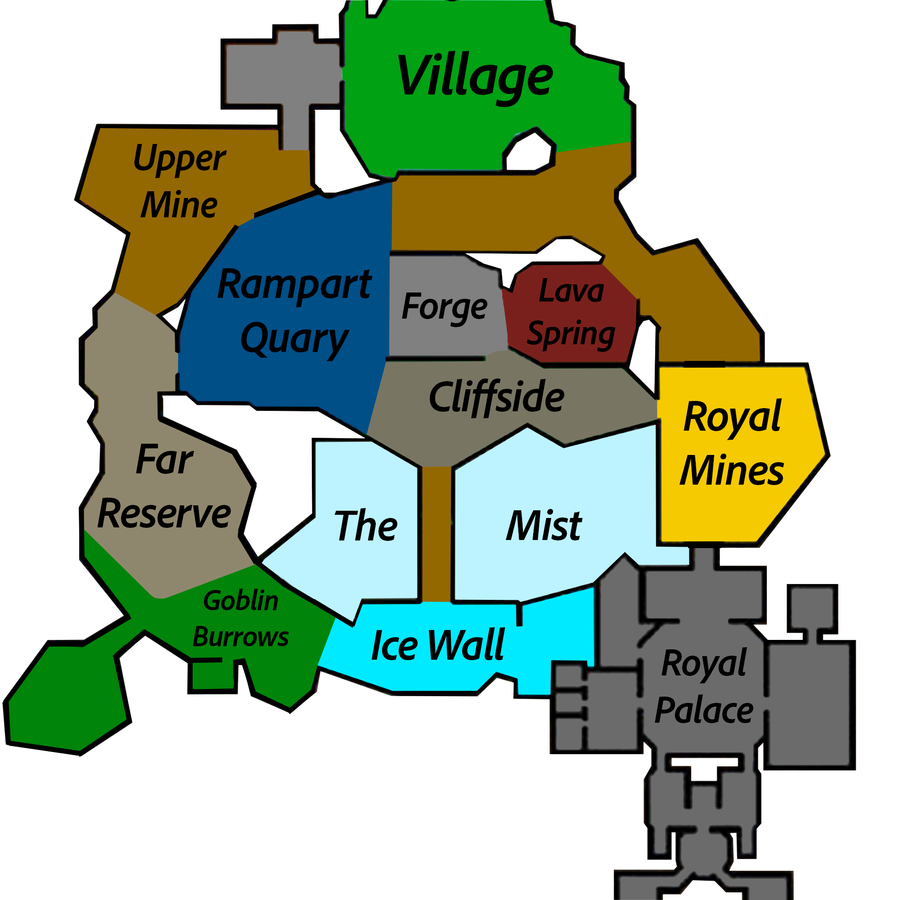

QCA settings
Left-click toggles a feature. Right-click opens its complete secondary settings without duplicating the master switch.
FEATURE GUIDE
QCloudy_Addition organizes maps, readable HUDs, Hunting and Foraging cues, pet information and 320 Attribute Shards into one bilingual, client-side experience.
01 / 05
ONE FUNCTION, ONE HOME
Functions appear once, under clear categories such as Mining, Farming, Fishing, Hunting, Dungeons and Slayer. Empty categories disappear instead of leaving blank pages.
Left-click toggles a feature. Right-click opens its complete secondary settings without duplicating the master switch.
An independent, default-off scan can surface recognized controls from installed SkyHanni, Skyblocker, Firmament, BabyZombieAddons and Feesh builds.
HUD scanning is a separate default-off feature. Recognized panels keep their provider's own save path; unsupported controls are listed as compatibility gaps.
Initial scans and Refresh both require a second confirmation. Installed providers only are shown; uncertain functions remain unclassified instead of being guessed.
Unified Settings and Unified HUD Editing remain experimental and may stop matching after a provider update.
02 / 05
MAPS & TRACKING

One continuous X/Z projection places a live approximate arrow over the supplied single-layer map. Y and scoreboard sub-location names are deliberately ignored.
Selects the correct low, middle or high local artwork from Y while keeping the player arrow aligned across all three layers.
Shows complete received commission names, progress bars, Mithril, Gemstone and Glacite Powder, plus an optional remembered HOTM preset.
03 / 05
SKILLS & TIMELY CUES
Recognizes the local water or Hypixel lava hook and plays the bundled Ciallo sound once per hook. Reeling cannot replay it. Disabled by default; volume defaults to 64%.
Combines Chapters, tasks, Whispers, Essence, Sweep, Forest Fortune, contests and an ownership-bounded rare Tree Gift alert in readable HUDs.
Includes Critterdex progress, Lasso REEL audio, Beeheemoth cues, Wumpa checklists and route projection, Cold safety, capture readiness and selected visual helpers.
Highlights received Ender Dragons through the vanilla outline pipeline and shows incomplete received Faction Quests without inventing missing progress.
Shows a center-screen warning only when the player's deployable fully despawns. Replacing an SOS resets its timer; leaving the effect range is intentionally ignored.
Shows the received level, rarity-coloured name, real pet or skin head, XP progress, remaining XP, skin and held item. Max-level pets hide only the redundant XP remainder.
04 / 05
ITEMS, MENUS & SHARDS
Searches effect text and acquisition methods, displays Shard-specific icons and correct semantic colours, and browses Details, ordered Recipes and reverse Uses without contacting the Wiki at runtime.
Builds multi-step routes, fastest or cheapest alternatives, Materials Only totals, Ironman plans, Kraken estimates and a warehouse based on Hunting Box pages the player physically opened.
Tracks exact received 48-hour activation or refresh lines, shows cake icons and remaining wall-clock time in an effects-style screen, and issues one combined expiry alert.
Includes local item timestamps, cursor memory and configurable AOTE/AOTV sound replacement. Removed slot locking and storage automation do not remain hidden in the menu.
05 / 05
PRESENTATION & CONTROL
Drag panels to move them and drag borders or corners to resize. Only enabled HUDs with real content appear in the editor.
Each HUD keeps its own 50–200% scale, background transparency, border, title colour, bold text and shadow.
Open settings with O, /qca or /qc. /qshard opens the Shard guide; /cake and /centurycakeeffect open Cake timers. These screen commands remain local.